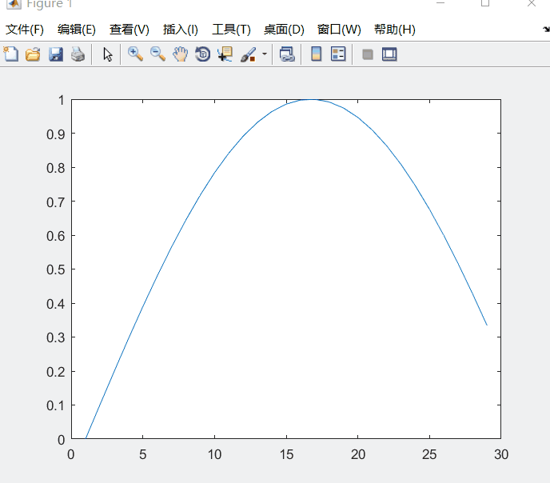

在最近的项目中，MATLAB/Simulink需要用到Python语言搭建的深度学习算法检测结果进行仿真，在最简单的利用mat文件进行离线仿真的基础上，经过一系列的调研，决定使用TCP通信进行数据的传输。
以前通过一个简单的例子实现Python与Matlab的简单TCP通信。具体思路如下：
- 利用python搭建服务端，一旦有客户端连接上，并且受到发送请求，便发送一个数据过去，关闭连接；
- Matlab中搭建客户端，连接服务端成功后发送请求，后接收数据，关闭连接；
- 本示例中，利用python服务端向matlab客户端发送正弦波；
首先是利用Python搭建出TCP服务端（server）：
1 | import socket |
Matlab中搭建客户端，在Matlab中利用编写以下脚本：
1 | clc; |
结果：
